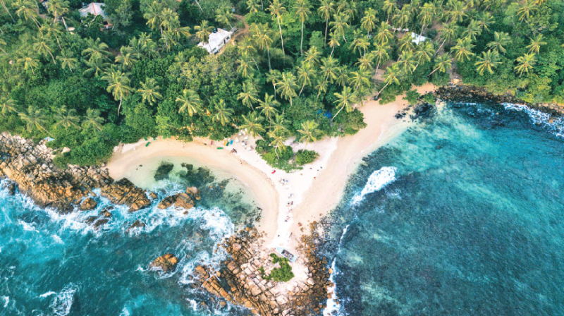

Sri Lanka is home to diverse and unique ecosystems, and several special areas have been designated to protect its rich wildlife.
Here are some of the notable wildlife special facts in Sri Lanka:
•Sri Lanka's forests,

Sri Lanka's diverse ecosystems reflect the island's commitment to conservation. The Sinharaja Rainforest stands as the last primary tropical rainforest, hosting unique endemic flora and fauna. The Knuckles Mountain Range, offers a varied landscape with cloud forests and montane grasslands. Horton Plains National Park features iconic landscapes like the World's End escarpment amidst montane grasslands and cloud forests.
Wasgamuwa National Park, along the Mahaweli River, showcases dry zone forests and grasslands, housing diverse wildlife. Wilpattu National Park, the oldest and largest, provides a habitat for a thriving leopard population amidst natural lakes and dense scrub jungles.
The Knuckles Forest Reserve, part of the Knuckles Mountain Range, highlights unique biodiversity with montane forests and grasslands. The Kanneliya-Dediyagala-Nakiyadeniya (KDN) Forest Complex shelters one of the last lowland rainforests rich in endemic species. Anawilundawa Wetland Sanctuary, a Ramsar Wetland Site, is a haven for migratory birds amid mangroves, marshes, and lagoons. These ecosystems collectively embody Sri Lanka's ecological wealth and conservation commitment.
•Sri Lanka's coastal waters,

Sri Lanka's coastal waters harbor a diverse and vibrant marine ecosystem, boasting a rich tapestry of sea life. The surrounding seas are home to an array of colorful coral reefs, where a multitude of marine species thrive. These coral ecosystems, found off the coasts of places like Hikkaduwa and Pigeon Island, contribute to the island's significant marine biodiversity. The warm Indian Ocean waters surrounding Sri Lanka are frequented by various species of dolphins and whales, making it a prime location for whale watching. The marine biodiversity includes an assortment of fish species, sea turtles, and crustaceans. Mangrove ecosystems, such as those in Puttalam and Batticaloa Lagoons, provide vital breeding grounds for numerous marine species. Sri Lanka's commitment to marine conservation underscores the importance of preserving this precious marine diversity for future generations.
•Sri Lanka's tropical climate,

Sri Lanka, an island nation in the Indian Ocean, boasts a climate as diverse as its landscapes. The country experiences a tropical climate with distinct wet and dry seasons, influenced by two monsoons. The southwest monsoon, from May to September, brings abundant rainfall to the southwestern regions, including the lush hills and tea plantations. In contrast, the northeast monsoon, from November to February, affects the northern and eastern coasts. Coastal areas enjoy a sun-kissed climate year-round, with temperatures ranging from 27 to 32 degrees Celsius. The central highlands, with cities like Kandy and Nuwara Eliya, offer a refreshing escape with cooler temperatures and occasional mist. Sri Lanka's climate fosters diverse ecosystems, from rainforests to arid zones, providing a picturesque backdrop to the island's rich cultural tapestry and vibrant wildlife.